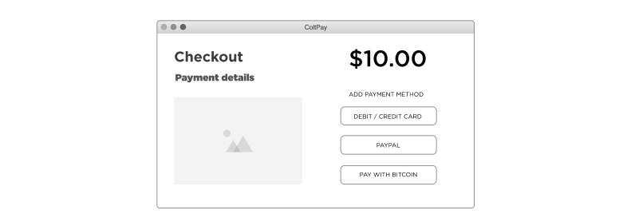

1 Account Profile
Under Settings > Coltpay enter both the public and private API keys found in Account Profile > API Keys. Both are required.

This guide will describe the intergration with wordpress using WooCommerce. It is recomended you read the basic wordpress intergration guide first and follow those steps. This guide also assumes you have WooCommerce installed and setup.
Under Settings > Coltpay enter both the public and private API keys found in Account Profile > API Keys. Both are required.
Under Woocommerce > Settings > Payments make sure the Coltpay option is enabled.

You can also edit the Title and Description that the end user will see on the checkout page.
When a payment is completed and is cleared to ship we will update the status to Processing.
If you are experiancing urther technical issues
Please reach out to support@coltpay.com